9.35 Illusion Laboratory
Spring 2021 Auditory Lab

The Effect of Stochastic Frequency Modulation on Filling-in Illusions
If there is no inherent order to a played tone, can there still be continuity through a noise burst?
The following illusions aim to address whether tone continuity would exist during random frequency modulation. In many continuity illusions, the brain utilizes a system of inference similar to that described in Bayes rule in order to maintain tone continuity through an interrupting noise burst.
In the following demonstrations, you will hear a frequency modulated tone that starts at 1000Hz and changes randomly by +/- the designated shift frequency every .0226ms (1 / fs). The tone will continue for .5s and then either a noise burst or a silence will follow (.25s). Finally, the tone will continue.
The first section of illusions contains tones that have an equal chance to move either up or down. The second section contains tones that are slightly biased to moving up. Finally, the last section contains tones that are biased to moving down.
By having tones with different biases for frequency movement, an overarching order (such as up or down) might be superimposed and utilized to provide continuity, making it easier to perceive a tone through a noise burst.
VOLUME WARNING: White noise can be loud!
Random frequency modulation with no upwards or downwards bias (click to play)
Tones start at a base frequency of 1000Hz and will have an equal chance of moving either up or down.
 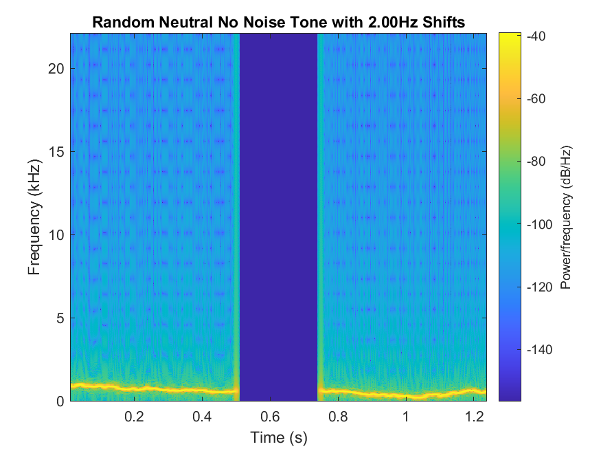
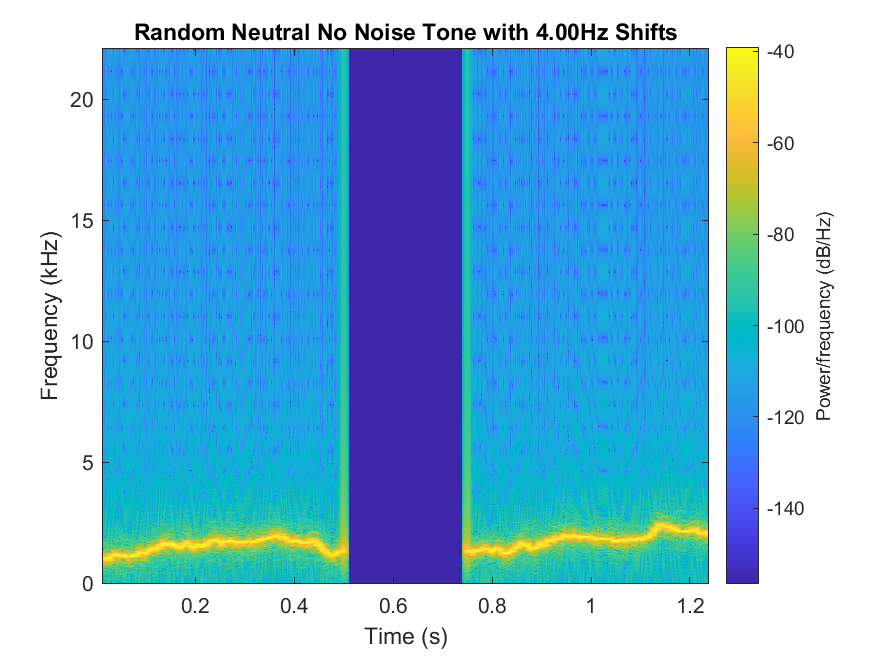
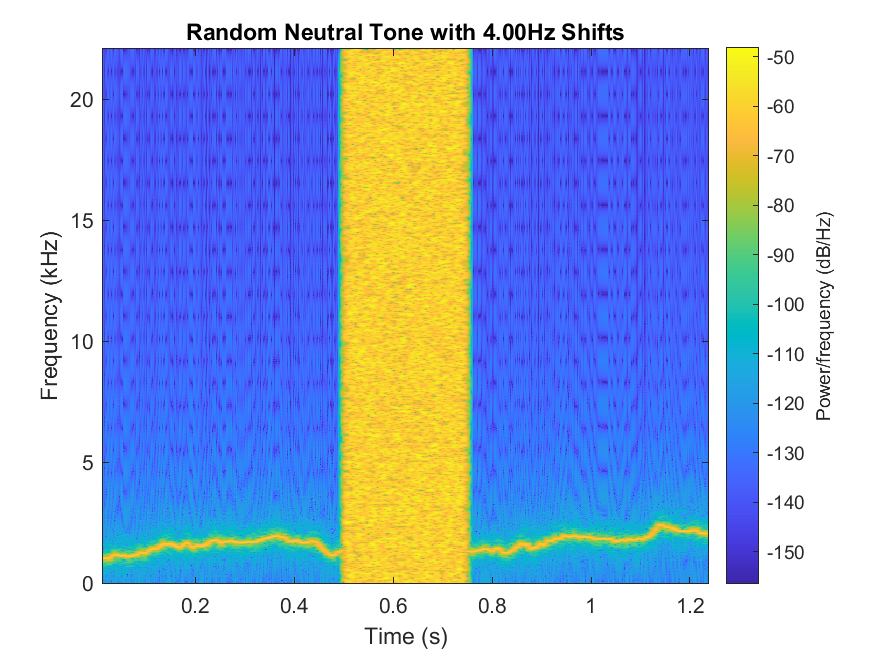
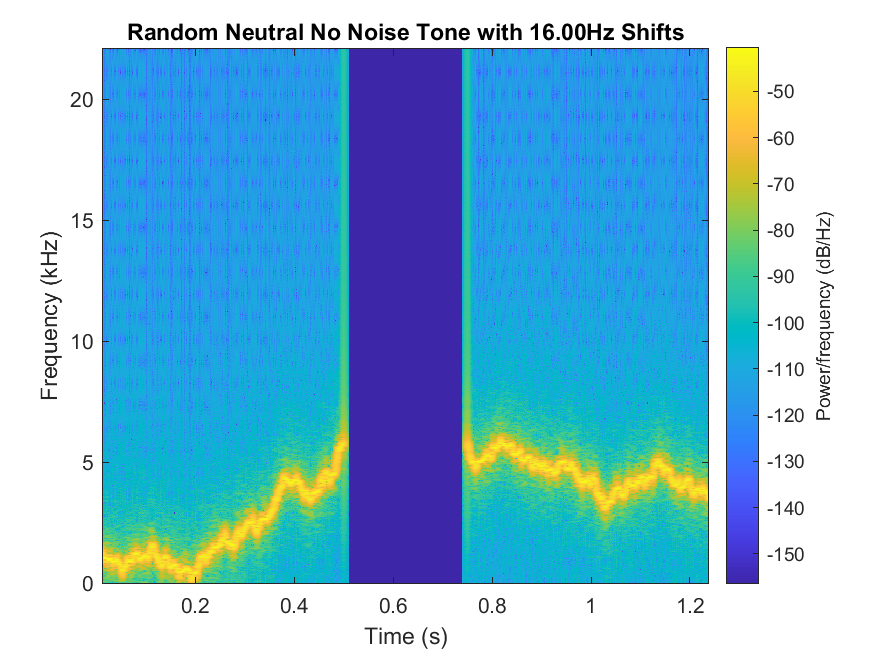
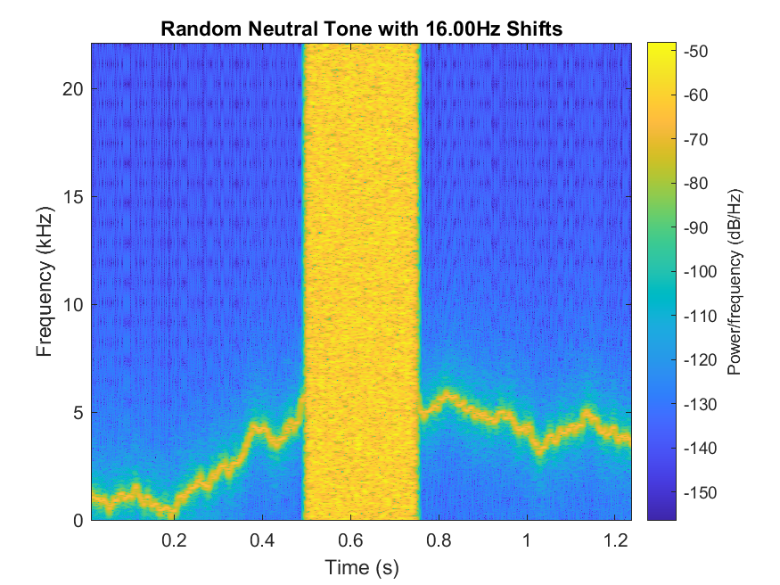
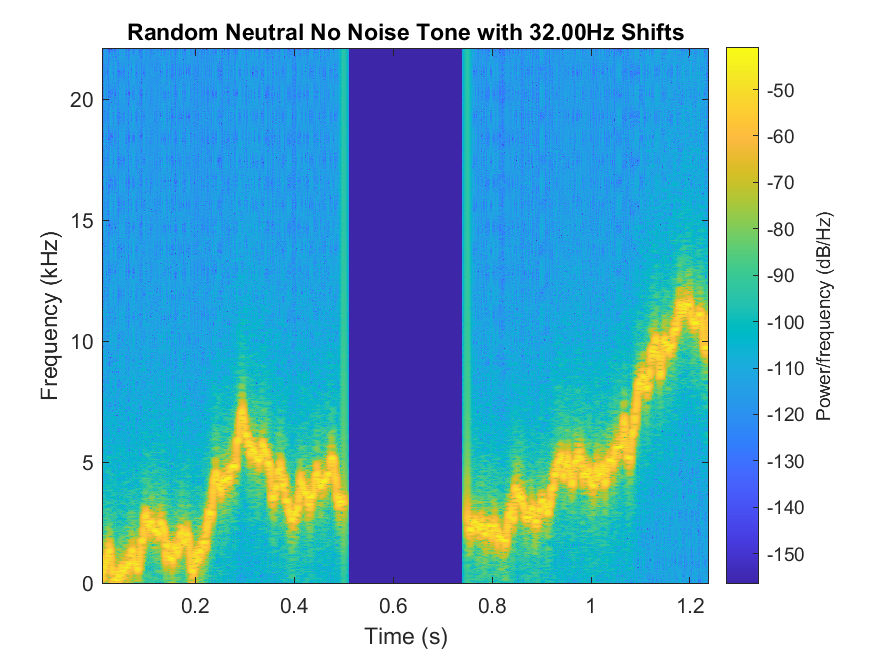
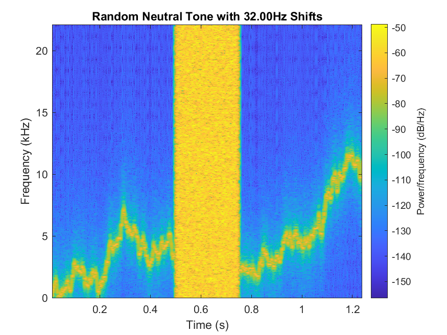
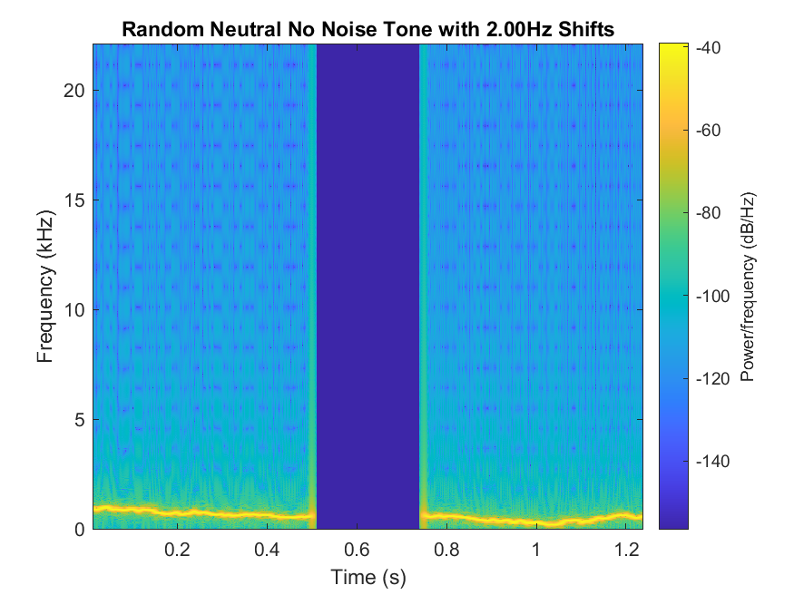
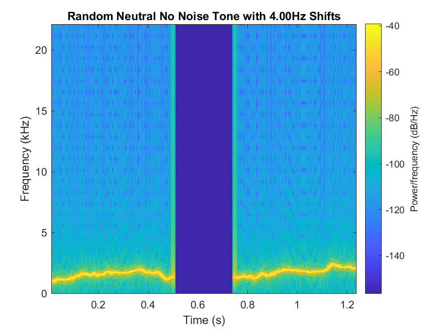
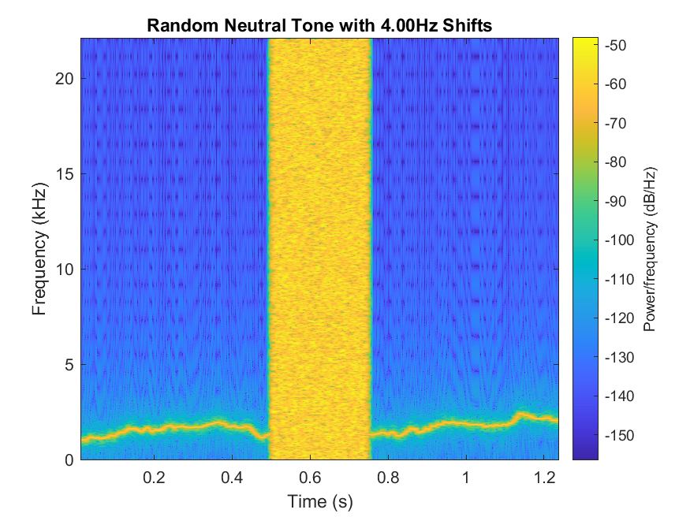
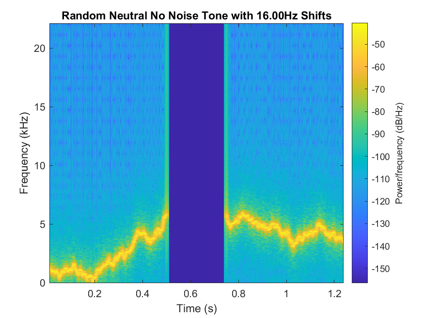
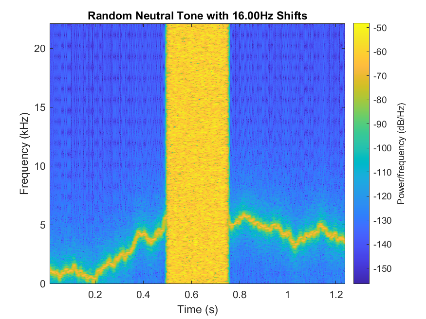
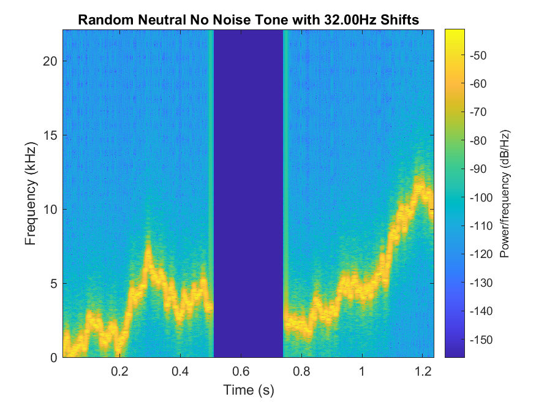
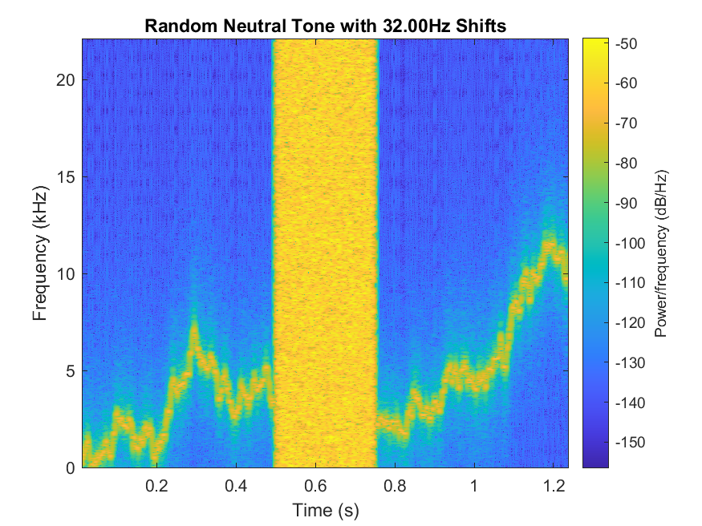
Random frequency modulation with upwards bias (click to play)
Tones start at a base frequency of 1000Hz and will move upwards with probability .505.
Random frequency modulation with downwards bias (click to play)
Tones start at a base frequency of 1000Hz and will move upwards with probability .495.
McWalter, R., McDermott, J.H. Illusory sound texture reveals multi-second statistical completion in auditory scene analysis. Nat Commun 10, 5096 (2019).
Warren, Richard M., Charles J. Obusek, and John M. Ackroff. "Auditory induction: perceptual synthesis of absent sounds." Science 176.4039 (1972): 1149-1151.
If you are interested in seeing other types of frequency modulations I tried you can view them here. This Google Drive contains exponential modulations, sigmoidal modulations, and linear modulation (with after noise frequency offsets).
If you are interested in viewing the code used for the generation of these illusions, you can find it here.